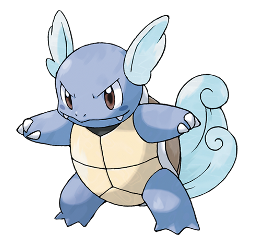

Wartortle

| Especie |
Tortuga |
| Tipo |
Agua |
| Habilidad |
Torrente |
| Hab. oculta |
Cura lluvia |
| Peso |
22.5 kg |
| Altura |
1.0 m |
| Grupos huevo |
Mostruo
Agua 1 |
| Habitat |
Agua dulce |
| Color |
Azul |
|
|
| Generacion |
Primera |
Sobre wartortle
Tiene una cola larga y cubierta de un pelo abundante y grueso que se torna más oscuro a medida que crece. Los arañazos que tiene en el caparazón dan fe de lo buen guerrero que es. Se dice que vive 10 000 años. Su peluda cola es un símbolo de longevidad. Si es golpeado, esconderá su cabeza. Aun así, su cola puede seguir golpeando.
¿Puedo conseguir a wartortle de un huevo?
No, wartortle es un Pokémon que se debe evolucionar, por lo que NO se puede conseguir incubando huevos.
¿Qué poder de combate (CP) tiene wartortle al evolucionar?
Si tienes un wartortle y quieres saber cuántos puntos de combate tendrá antes de evolucionarlo, puedes usar la siguiente calculadora de evolución y averiguarlo fácilmente. Simplemente indica los puntos de combate de tu wartortle y pulsa sobre el botón "Evolucionar"
¿Cuáles son las fortalezas y debilidades de wartortle?
wartortle es un pokémon de tipo Agua. Los pokémon tipo Agua son fuertes contra los pokémon de tipo Fuego, Tierra, Roca pero debiles contra los pokémon de tipo Agua, Planta, Dragón, Eléctrico.